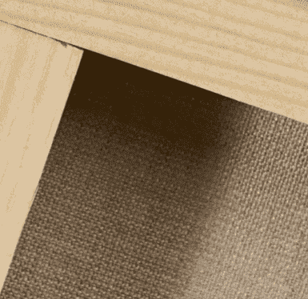

La toile peinture de lin

Caractéristiques de la toile de lin :
La toile de lin est aujourd’hui considérée comme la toile la plus prestigieuse, la plus noble cependant elle est aussi la plus coûteuse. La toile de lin est une toile solide, résistante à l’humidité et qui est très stable dans le temps, avec un grain qui peut aller de fin jusqu'à gros. Elle est de couleur blanc cassé ou beige.
Peintures utilisées sur la toile de lin:
Les peintures les plus utilisées sur la toile de lin sont la peinture à l'huile et la peinture acrylique.
Prix moyen :
Le prix moyen d'un châssis entoilé avec la toile de lin est de 10€ pour une dimension de 30 x 30 cm.
| Les plus | Les moins |
|---|---|
|
|